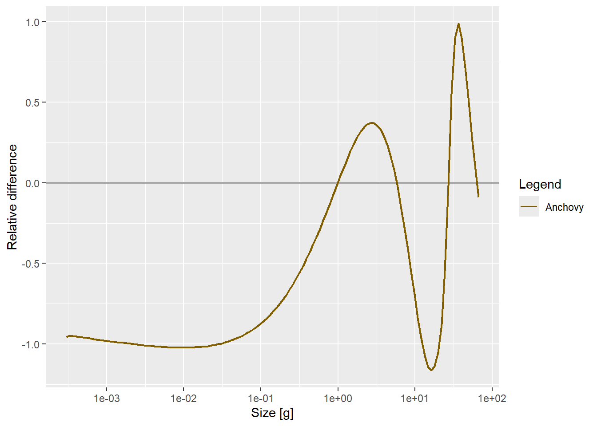
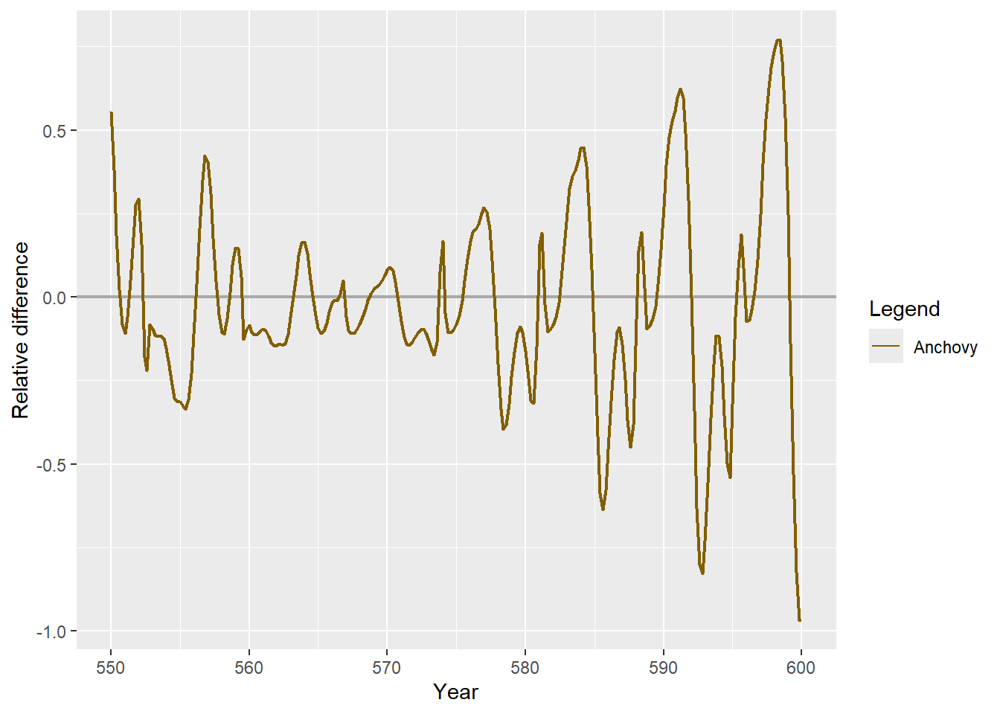
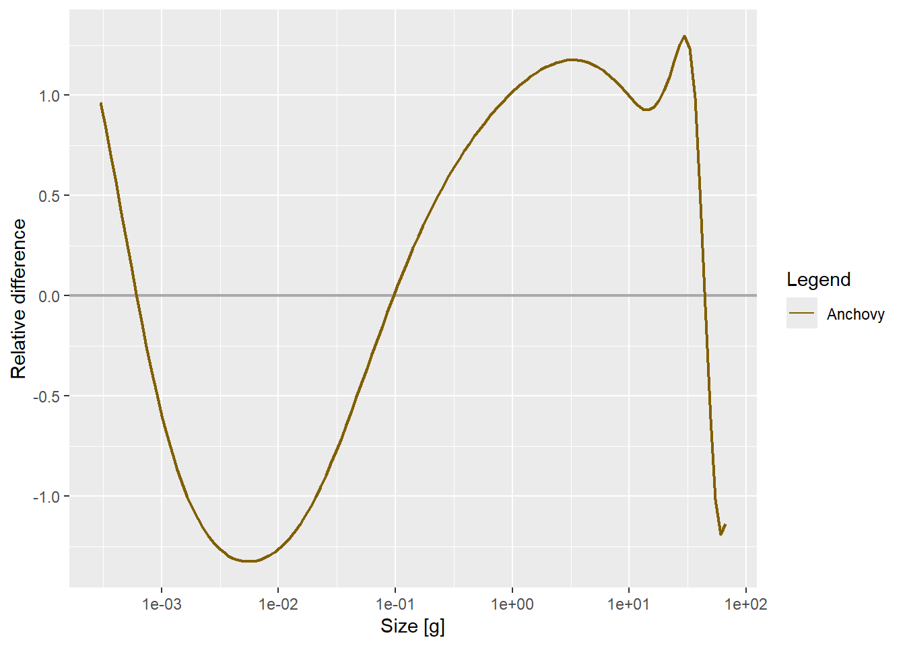
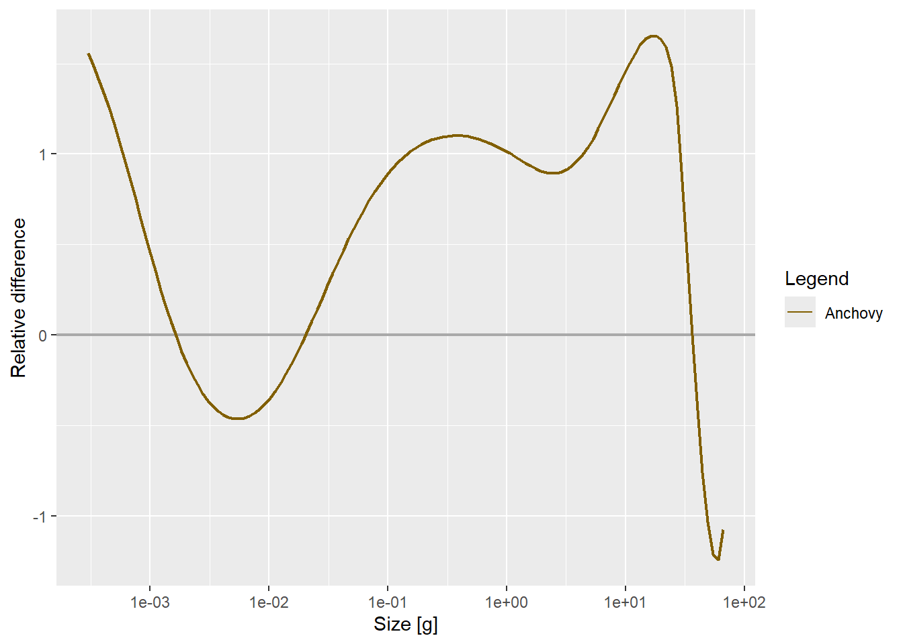
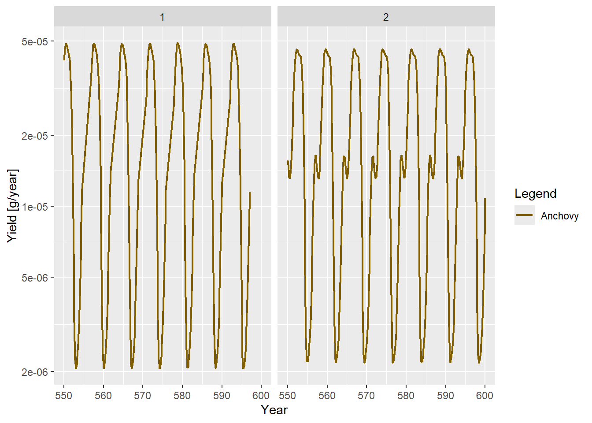
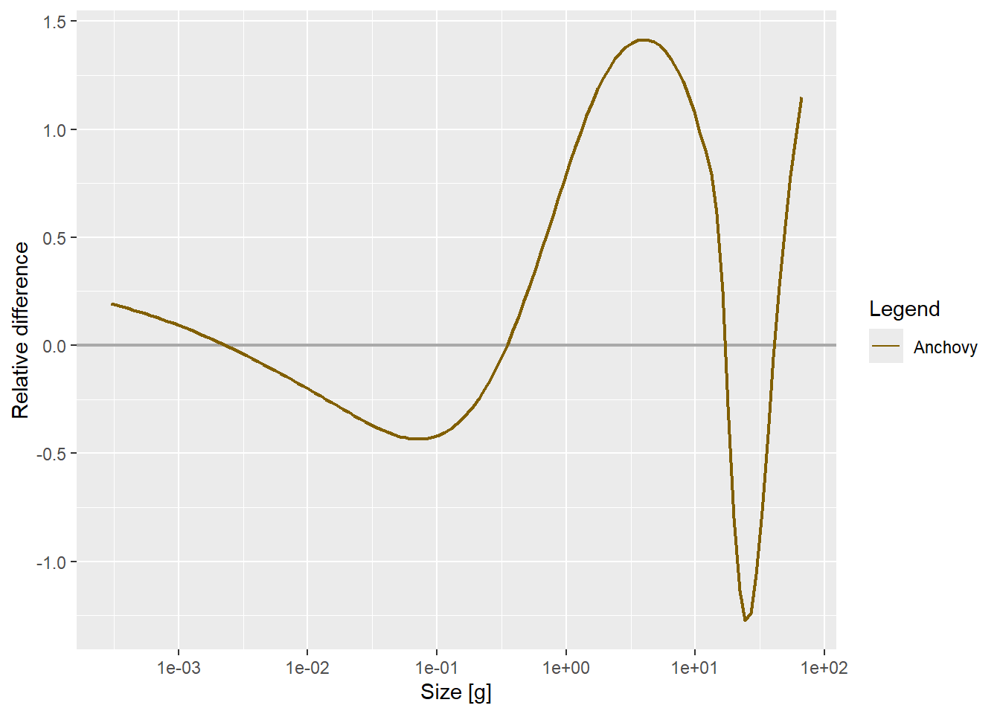
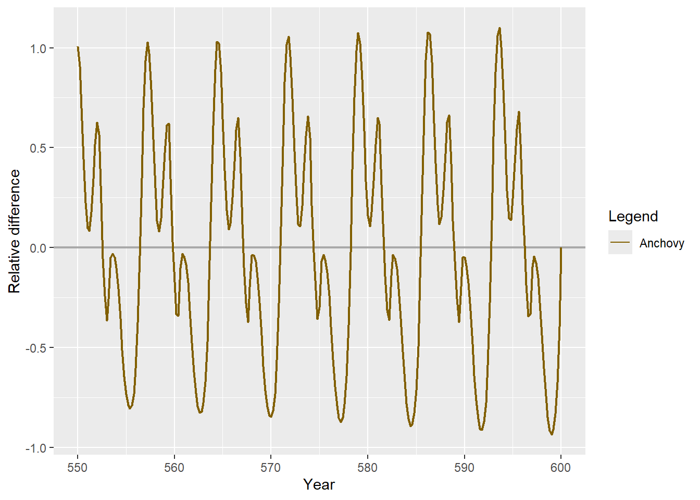
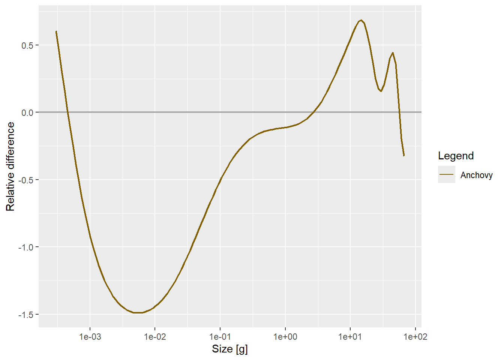
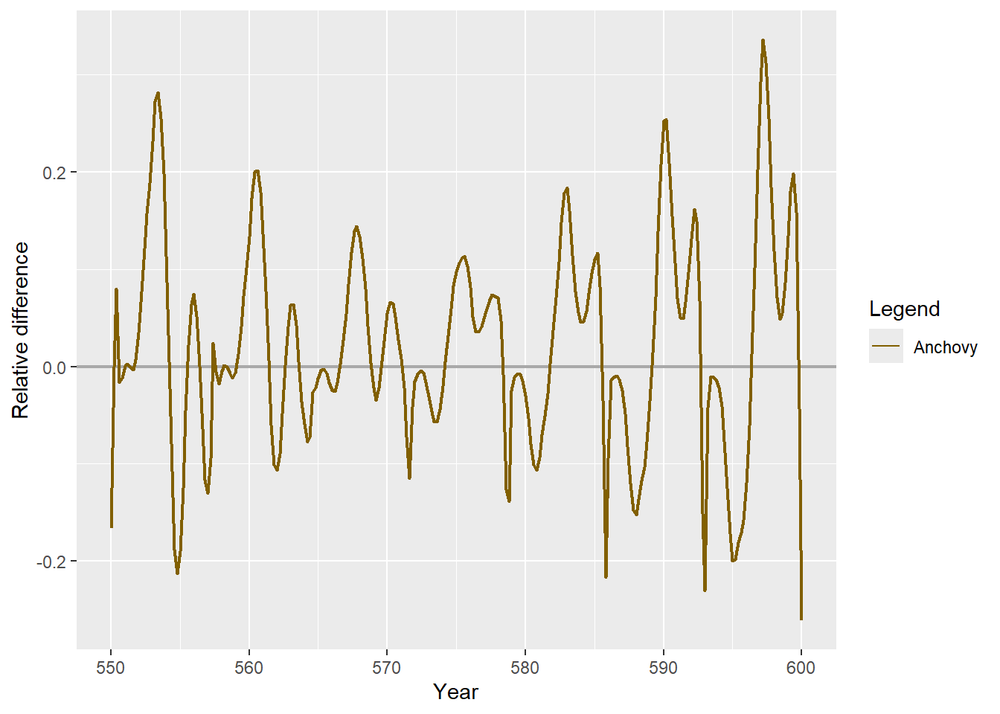

Code
box_selectivity_func <- function(w, w_low, w_high, ...) {
as.numeric(w >= w_low & w <= w_high)
}Samia
June 19, 2026
Day 9 ended on an uncomfortable correction: once the gear_params<- selectivity bug was actually fixed and plotRelative was read properly instead of eyeballed, peaks-only fishing on the bottleneck gear didn’t relieve the jam where it mattered. It relieved congestion for sub-adults and fish approaching maturity, but it measurably worsened the food-limited queue at juvenile sizes. The open question going into today was why, and whether that was about selectivity (still catching too many juveniles), timing (fishing too rarely near each peak), or something else entirely.
First thing today: re-running yesterday’s fixed code in a fresh session immediately hit a new error.
Error in get(fun, mode = "function", envir = envir) :
object 'box_selectivity_func' of mode 'function' was not foundThe gear_params(params) <- gp fix from Day 9 was correct, but it calls setFishing() immediately, which looks up sel_func by name and calls it right away, not lazily later inside project(). The actual function definition had never made it into the saved script, only the string "box_selectivity_func" referencing it. Added it back in, with ... in the signature so it absorbs the species_params argument mizer’s calc_selectivity() always passes (the same fix bottleneck_sel needed in yesterday’s post):
With that in place, every comparison below is finally running on the gear that’s actually intended, not a silent default.
Before getting back to the fishing experiments, a side observation from poking at lambda again: it doesn’t just change whether there’s a bottleneck (Day 8 already showed that), it shifts where in time the bottleneck shows up in a settling simulation. Higher lambda pushes the bottleneck later; lower lambda brings it on earlier.
This is currently just an eyeballed observation from watching plotHover(getFlux(...)) across a couple of lambda values, not a quantified sweep and Day 9’s own lesson was “don’t trust an eyeballed read, put a number on it.” So this one goes straight into What’s Next rather than being treated as confirmed.
With the bug fixed, the gear now genuinely targets sub-adults only (w_low = 0.5 * w_mat to w_high = w_mat), not the unintended default:
library(mizer)
library(patchwork)
library(reshape2)
library(plotly)
library(dplyr)
library(mizerExperimental)
library(tidyverse)
library(glue)
library(ggplot2)
#Useful Plots
nice_animation <- function(sim,t){
nf <- melt(sim@n)
n_ppf <- melt(sim@n_pp)
n_ppf$sp <- "Plankton"
nf <- rbind(nf, n_ppf)
plot_ly(nf) %>%
# show only part of plankton spectrum
filter(w > 10^-5) %>%
# start at time 50
filter(time >= t) %>%
# calculate biomass density with respect to log size
mutate(b = value * w^2) %>%
# Plot lines
add_lines(
x = ~w, y = ~b,
color = ~sp,
frame = ~time,
line = list(simplify = FALSE)
) %>%
# Use logarithmic axes
layout(xaxis = list(type = "log", exponentformat = "power",
title_text = "body mass (g)"),
yaxis = list(type = "log", exponentformat = "power",
title_text = "biomass (g/m^3)",
range = c(-8, 0)))
}
nice_biomass_plot <- function(sim,t){
abm <- melt(getBiomass(sim))
abmr <- melt(getBiomass(sim, min_w = 0.01, max_w = 0.4))
abmr$sp <- "small Anchovy"
pbm <- sim@n_pp %*% (params@w_full * params@dw_full)
pbm <- melt(pbm)
names(pbm)[names(pbm) == "Var1"] <- "time"
pbm$Var2 <- NULL
pbm$sp <- "Plankton"
bm <- rbind(pbm, abm, abmr)
plot_ly(bm) %>%
filter(time >= t) %>%
add_lines(x = ~time, y = ~value, color = ~sp) %>%
# Use logarithmic axes
layout(yaxis = list(type = "log", exponentformat = "power",
title_text = "biomass (g/m^3)",
range = c(-7, 2)),
xaxis = list(title_text = "time (year)"))
}
################## Code from yesterday that I'll experiment on #################
p <- list(
dt = 0.001,
dx = 0.1,
w_min = 0.0003,
w_max = 66.5, # was w_inf
w_mat = 10,
alpha = 0.1, # assimilation efficiency (was p$K)
gamma = 750,
lambda = 2.05,
a0 = 100
)
kappa <- p$a0 * exp(-6.9 * (p$lambda - 1))
no_w <- round(log(p$w_max / p$w_min) / p$dx)
params <- newSingleSpeciesParams(
species_name = "Anchovy",
w_min = p$w_min,
w_max = p$w_max,
w_mat = p$w_mat,
no_w = no_w,
lambda = p$lambda,
kappa = kappa,
alpha = p$alpha,
gamma = p$gamma,
ks = 0
)
r <- getResourceRate(params)
r <- r*0.001
params <- setResource(params, resource_rate = r, resource_dynamics = "resource_semichemostat")
params@initial_n_pp[] <- params@cc_pp * 0.1
test_sizes <- list(
"small" = c(0.1, 1),
"medium" = c(1, 10),
"large" = c(10, 100)
)
# --- Shared phase: perturbation + settling, no fishing ---
sim <- project(params, t_max = 10, dt = 0.1, t_save = 0.2,
effort = 0, progress_bar = FALSE, method = "predictor-corrector")
# rng <- test_sizes[["large"]]
# idx <- params@w >= rng[1] & params@w <= rng[2]
# last <- dim(sim@n)[1]
# sim@n[last, , idx] <- sim@n[last, , idx] / 10^3
sim <- project(sim, t_max = 90, dt = 0.1, t_save = 0.2,
effort = 0, progress_bar = FALSE, method = "predictor-corrector")
sim_300 <- project(sim, t_max = 200, dt = 0.1, t_save = 0.2,
effort = 0, progress_bar = FALSE, method = "predictor-corrector")
# --- Branch 1: no fishing (this is your existing pipeline) ---
sim_600 <- project(sim_300, t_max = 300, dt = 0.1, t_save = 0.2,
effort = 0, progress_bar = FALSE, method = "predictor-corrector")
bottleneck_sel <- function(w, w_low, w_high) {
as.numeric(w >= w_low & w <= w_high)
}
box_selectivity_func <- function(w, w_low, w_high, ...) {
as.numeric(w >= w_low & w <= w_high)
}
params_fished <- sim_300@params
gp <- params_fished@gear_params
gp$sel_func <- "box_selectivity_func"
gp$w_low <- 0.5 * p$w_mat
gp$w_high <- p$w_mat
gp$catchability <- 1
gp$knife_edge_size <- NULL
gear_params(params_fished) <- gp
sim_300_fished <- sim_300
sim_300_fished@params <- params_fished
sim_fished <- project(sim_300_fished, t_max = 300, dt = 0.1, t_save = 0.2,
effort = 0.3, progress_bar = FALSE,
method = "predictor-corrector")
plotRelative(getFlux(sim_600, power = 2), getFlux(sim_fished, power = 2), tlim = c(550, 600))

Same qualitative result as before the bug was found: fishing the bottleneck gear constantly eases congestion at the worst point in the spectrum, but at the cost of introducing new bottlenecks elsewhere. Removing biomass continuously changes the whole flow pattern, not just the part you’re targeting so relief in one place seems to show up as a cost somewhere else in a closed system like this.
The peaks-only schedule from Day 9, rebuilt on the corrected gear:
all_times <- as.numeric(dimnames(sim_600@n)[[1]])
keep <- all_times >= 300
t_p <- all_times[keep]
time_lbls <- dimnames(sim_600@n)[[1]][keep]
bm <- getBiomass(sim_600)[, "Anchovy"]
bm_p <- bm[time_lbls]
n <- length(bm_p)
is_peak <- logical(n)
is_peak[2:(n-1)] <- bm_p[2:(n-1)] > bm_p[1:(n-2)] & bm_p[2:(n-1)] > bm_p[3:n]
peak_times <- t_p[is_peak]
window <- 3 # years either side of peak to fish
fish_level <- 0.3
effort_vec <- rep(0, length(t_p))
for (pt in peak_times) {
effort_vec[t_p >= pt - window / 2 & t_p <= pt + window / 2] <- fish_level
}
gear_name <- params_fished@gear_params$gear[1]
effort_arr <- matrix(effort_vec, ncol = 1, dimnames = list(time_lbls, gear_name))
sim_peaks_only <- project(sim_300_fished, t_max = 300, dt = 0.1, t_save = 0.2,
effort = effort_arr, progress_bar = FALSE,
method = "predictor-corrector")
plotRelative(getFlux(sim_600, power = 2), getFlux(sim_peaks_only, power = 2), tlim = c(550, 600))


[1] 1.597538e-05[1] 2.095615e-05The window shown above (3 years either side) is already the fixed value. The first pass today reused something close to Day 9’s narrower window, and it relieved the original bottleneck better than fishing everywhere did, exactly as hoped. But the new bottlenecks it introduced elsewhere in the spectrum were worse than the new bottlenecks fishing-everywhere had introduced. That’s a genuinely bad trade: better at the one thing it was supposed to fix, worse everywhere else. Worth digging into why before concluding peaks-only fishing was the better strategy after all.
First hypothesis: maybe the new, worse bottlenecks were because the gear was still catching too far down into the juvenile range. Built a juvenile-inclusive comparison variant, the original setup from before the sub-adults-only restriction, to test it directly:
params_fished_juv <- sim_300@params
gp_juv <- params_fished_juv@gear_params
gp_juv$sel_func <- "box_selectivity_func"
gp_juv$w_low <- 0.01 # juveniles included
gp_juv$w_high <- p$w_mat
gp_juv$catchability <- 1
gp_juv$knife_edge_size <- NULL
gear_params(params_fished_juv) <- gp_juv
sim_300_fished_juv <- sim_300
sim_300_fished_juv@params <- params_fished_juv
sim_fished_juv <- project(sim_300_fished_juv, t_max = 300, dt = 0.1, t_save = 0.2,
effort = 0.3, progress_bar = FALSE,
method = "predictor-corrector")
sim_peaks_only_juv <- project(sim_300_fished_juv, t_max = 300, dt = 0.1, t_save = 0.2,
effort = effort_arr, progress_bar = FALSE,
method = "predictor-corrector")
plotRelative(getFlux(sim_fished_juv, power = 2), getFlux(sim_fished, power = 2), tlim = c(550, 600))



This wasn’t it, or at least not the main driver ; juveniles-included vs. sub-adults-only produced broadly similar patterns of new bottlenecks under both fishing strategies. Excluding juveniles from the catch is still the right thing to do on biological grounds, but it isn’t what explains why peaks-only fishing was creating worse new congestion than fishing constantly.
Going back to basics: with a narrow window, the peaks-only schedule is only fishing for a small slice of each cycle as most of the time, effort is sitting at zero. That’s the entire appeal (avoid fishing during troughs), but it also means each fishing pulse has to do disproportionately more work whenever it is active, concentrating pressure into a short burst rather than spreading it out. That concentration looks like exactly the kind of thing that could create sharper, worse localised bottlenecks than constant low-level fishing does.
Widening the window from something close to Day 9’s ~2.6 years to 3 years either side of each peak (the window <- 3 already shown above) eased this substantially. The new-bottleneck problem that motivated the selectivity hypothesis mostly went away once fishing was active for a larger share of each cycle. It wasn’t about which sizes were being caught, it was about how often fishing was actually happening.
plotRelative-style measurement, rather than eyeballing a couple of plotHover panels — same lesson Day 9 already learned the hard way, just applied to a new parameter.plotRelative comparisons across the full size spectrum (not just eyeballing whether new bottlenecks look “worse”) to get an honest, quantified before/after picture now that window = 3 is in place as there may still be a smaller residual bottleneck hiding somewhere that hasn’t been checked for directly.